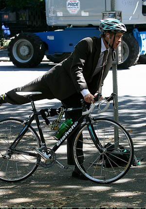

Gossip blogger Perez Hilton says:
We’ve been getting tons of emails from readers about an Angelina Jolie sighting in the town of Bastrop, TX (right outside of Austin).
Apparently, the pregnant star was at a local Wal-Mart with little Maddox.
We have a feeling this might be a case of spotting Bigfoot. Do you really think Momma Jolie will be going to Wal-Mart herself???
But… you never know. Brange do get around!
Update: Brad is supposedly staring to shoot a new film in the area.
And the madness begins.


Comments
Don’t believe one optimistic word from any public figure about the economy or humanity in general. They are all part of the problem. Its like a game of Monopoly. In America, the richest 1% now hold 1/2 OF ALL UNITED STATES WEALTH. Unlike ‘lesser’ estimates, this includes all stocks, bonds, cash, and material assets held by America’s richest 1%. Even that filthy pig Oprah acknowledged that it was at about 50% in 2006. Naturally, she put her own ‘humanitarian’ spin on it. Calling attention to her own ‘good will’. WHAT A DISGUSTING HYPOCRITE SLOB. THE RICHEST 1% HAVE LITERALLY MADE WORLD PROSPERITY ABSOLUTELY IMPOSSIBLE. Don’t fall for all of their ‘humanitarian’ CRAP. ITS A SHAM. THESE PEOPLE ARE CAUSING THE SAME PROBLEMS THEY PRETEND TO CARE ABOUT. Ask any professor of economics. Money does not grow on trees. The government can’t just print up more on a whim. At any given time, there is a relative limit to the wealth within ANY economy of ANY size. So when too much wealth accumulates at the top, the middle class slip further into debt and the lower class further into poverty. A similar rule applies worldwide. The world’s richest 1% now own over 40% of ALL WORLD WEALTH. This is EVEN AFTER you account for all of this ‘good will’ ‘humanitarian’ BS from celebrities and executives. ITS A SHAM. As they get richer and richer, less wealth is left circulating beneath them. This is the single greatest underlying cause for the current US recession. The middle class can no longer afford to sustain their share of the economy. Their wealth has been gradually transfered to the richest 1%. One way or another, we suffer because of their incredible greed. We are talking about TRILLIONS of dollars. Transfered FROM US TO THEM. Over a period of about 27 years. Thats Reaganomics for you. The wealth does not ‘trickle down’ as we were told it would. It just accumulates at the top. Shrinking the middle class and expanding the lower class. Causing a domino effect of socio-economic problems. But the rich will never stop. They will never settle for a reasonable share of ANYTHING. They will do whatever it takes to get even richer. Leaving even less of the pie for the other 99% of us to share. At the same time, they throw back a few tax deductable crumbs and call themselves ‘humanitarians’. IT CAN’T WORK THIS WAY. This is going to end just like a game of Monopoly. The current US recession will drag on for years and lead into the worst US depression of all time. The richest 1% will live like royalty while the rest of us fight over jobs, food, and gasoline. Crime, poverty, and suicide will skyrocket. So don’t fall for all of this PR CRAP from Hollywood, Pro Sports, and Wall Street PIGS. ITS A SHAM. Remember: They are filthy rich EVEN AFTER their tax deductable contributions. Greedy pigs. Now, we are headed for the worst economic and cultural crisis of all time. SEND A “THANK YOU” NOTE TO YOUR FAVORITE MILLIONAIRE. ITS THEIR FAULT. I’m not discounting other factors like China, sub-prime, or gas prices. But all of those factors combined still pale in comparison to that HUGE transfer of wealth to the rich. Anyway, those other factors are all related and further aggrivated because of GREED. If it weren’t for the OBSCENE distribution of wealth within our country, there never would have been such a market for sub-prime to begin with. Which by the way, was another trick whipped up by greedy bankers and executives. IT MAKES THEM RICHER. The credit industry has been ENDORSED by people like Oprah, Ellen, Dr Phil, and many other celebrities. IT MAKES THEM RICHER. So don’t fall for their ‘humanitarian’ BS. ITS A SHAM. NOTHING BUT TAX DEDUCTABLE PR CRAP. Bottom line: The richest 1% will soon tank the largest economy in the world. It will be like nothing we’ve ever seen before. and thats just the beginning. Greed will eventually tank every major economy in the world. Causing millions to suffer and die. Oprah, Angelina, Brad, Bono, and Bill are not part of the solution. They are part of the problem. EXTREME WEALTH HAS MADE WORLD PROSPERITY ABSOLUTELY IMPOSSIBLE. WITHOUT WORLD PROSPERITY, THERE WILL NEVER BE WORLD PEACE OR ANYTHING EVEN CLOSE. GREED KILLS. IT WILL BE OUR DOWNFALL. Of course, the rich will throw a fit and call me a madman. Of course, their ignorant fans will do the same. You have to expect that. But I speak the truth. If you don’t believe me, then copy this entry and run it by any professor of economics or socio-economics. Then tell a friend. Call the local radio station. Re-post this entry or put it in your own words. Be one of the first to predict the worst economic and cultural crisis of all time and explain its cause. WE ARE IN BIG TROUBLE.
…..I’m thinking about that whole bottle of sleeping pills sitting on my dresser. Wouldn’t it be nice to pop one…..and then another…..and another…..until the disillusionment of my life is washed away?
Wait. What am I thinking? And miss a Brad Pitt sighting!?
(Please, Brad, please. Give my life meaning!)
I’ll leave the doom and gloom to those who are clearly more qualified.
I’m headed to Bastrop!